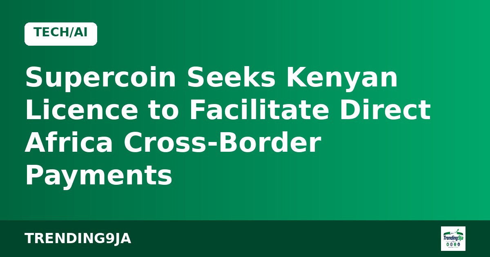
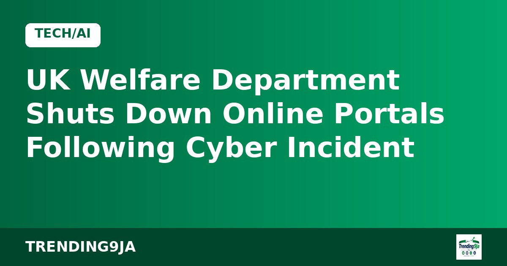

UK Welfare Department Shuts Down Online Portals Following Cyber Incident
The UK Department for Work and Pensions has taken several benefit and pension portals offline following a cyber incident, according to Punch.

Digital payments firm Supercoin is seeking approval from the Central Bank of Kenya to roll out a stablecoin backed by the Kenyan shilling. According to a report by TechCabal, the initiative aims to facilitate financial transfers between South Africa and Kenya without relying on the United States dollar as an intermediary currency.
Supercoin, an entity owned by Betway parent company Super Group, hopes to begin providing services to financial operators by early 2027 if regulators grant permission. The proposed model involves remittance operators accepting South African rand, swapping the firm’s rand-pegged digital token, ZARsc, for the shilling-backed token, KESsc, and disbursing funds directly inside Kenya.
Gideon Greaves, the managing director of Supercoin, explained that creating deep liquidity for the currency pair would enable instant payment rails between the two economies. Greaves told TechCabal that Kenya was selected because of its defined regulatory framework and an established domestic ecosystem that is already comfortable utilizing digital currencies.
The planned rollout targets fintech startups, money transfer firms, and financial networks, while a direct consumer digital wallet is being considered for late 2027. However, the venture enters a competitive landscape where US dollar-pegged assets are dominant. International Monetary Fund data cited in the report revealed that stablecoins represented between $3 billion and $4 billion of the roughly $5.7 billion traded in digital assets across Kenya in 2025, largely led by Tether's USDT.
A key requirement for the initiative's success is ensuring reliable cash payout mechanisms, known as off-ramps, so recipients can access local currency without delays. Supercoin stated that it has secured an off-ramp partnership in Kenya, though discussions concerning integrations with widely used mobile money networks remain in preliminary stages.
Sources: TechCabal
← More Tech/AI stories
The UK Department for Work and Pensions has taken several benefit and pension portals offline following a cyber incident, according to Punch.
MTN and Telkom have resumed takeover discussions in South Africa four years after previous talks failed, according to TechCabal.

Digital Jewels Africa will host an anniversary conference in Lagos on November 25 to address corporate cybersecurity and artificial intelligence risks across Africa.
Nigeria's trending news, politics and entertainment, straight to your email.
By subscribing you agree to our Privacy Policy. Unsubscribe any time.